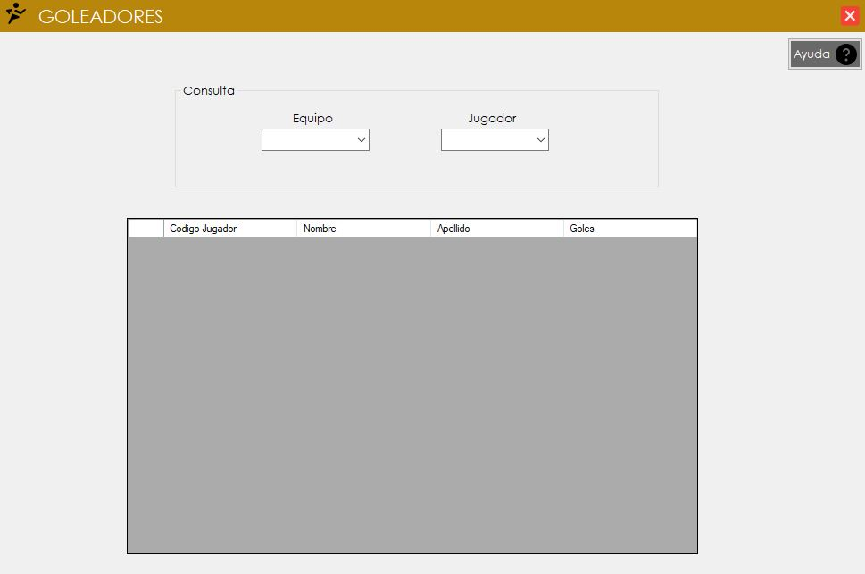
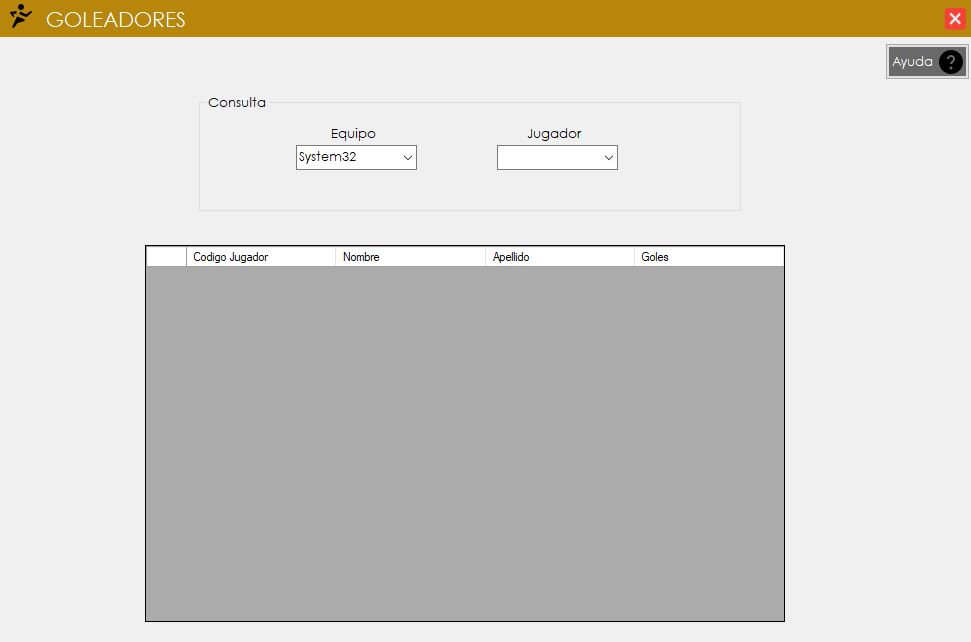
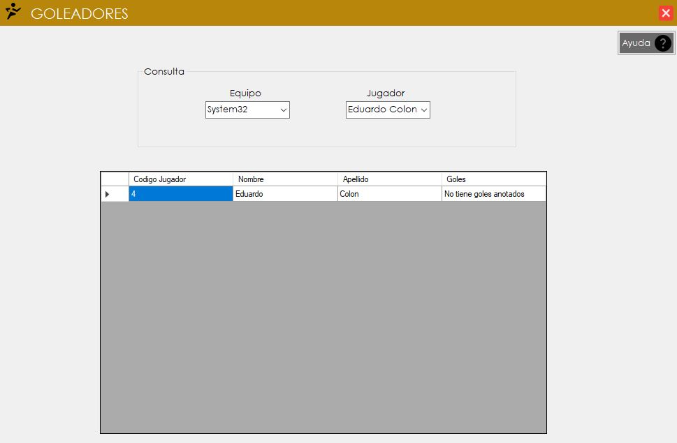

Control Goleadores
1. Ingresando al formulario del Control de Goleadores:

2. Al ingresar al formulario se selecciona al equipo que se desea consultar.

3.Luego se seleccionara el nombre del jugador que se desea observar, al tener seleccionado las dos opciones se puede visualizar los datos correspondites referido al jugador.
